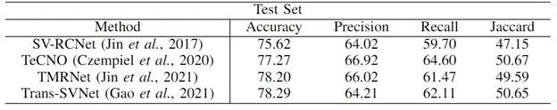
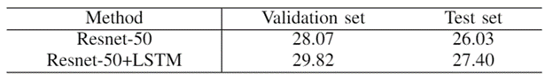
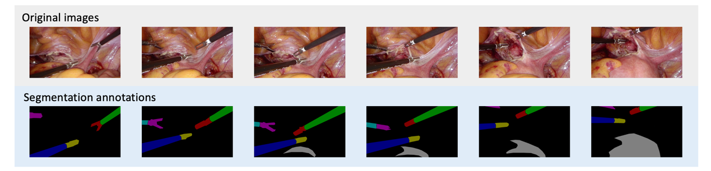
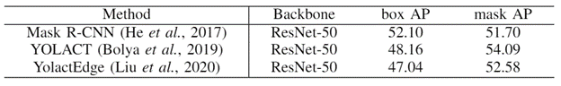

The image and video data streamed from the endoscope provide rich information to facilitate context-awareness for next-generation intelligent surgical systems. To realize intelligent perception and automatic manipulation during the procedure, annotated data are required, especially in medical field, where the data varies significantly across different surgeries.
A new integrated dataset is proposed with multiple image-based perception tasks to facilitate learning-based automation in hysterectomy surgeries. The dataset is developed based on full-length videos of entire hysterectomy procedures. Specifically, three different yet highly correlated tasks are formulated in the dataset including surgical workflow recognition, laparoscope motion prediction, and instrument and key anatomy segmentation. In addition, benchmarks are provided as reference for further model developments and evaluations on this dataset.
The data was collected from the hospital. The release of this dataset has been approved by clinical research ethics committee.
Three tasks are defined along with the corresponding annotations based on the collected video data, and they are:
It is worth noting that the tasks, data and annotations included in this dataset are highly correlated to support both uni- and multi-modality- based model development.
This task focuses on the workflow analysis of laparoscopic hysterectomy procedures, which is fundamental to the scene understanding in surgery and will help to recognize current surgical phase and provide high-level information to the other two tasks.
The hysterectomy procedure is divided into 7 stages, that is, ‘Preparation’, ‘Dividing Ligament and Peritoneum’, ‘Dividing Uterine Vessels and Ligament’, ‘Transecting the Vagina’, ‘Specimen Removal’, ‘Suturing’, and ‘Washing’.
Four metrics are used to comprehensively evaluate the performances of baseline models, i.e., accuracy (AC), precision (PR), recall (RE) and Jaccard (JA), following the common practice in surgical workflow recognition
Table 1. Experimental results (%) of four baseline models on test set.

In order to further promote the automatic laparoscope motion control, we propose a sub-dataset that corresponds the video feedback to the laparoscope motion mode.
The motion mode is divided into seven categories, including one static mode and six motion mode, which are up, down, left, right, zoom in and zoom out.
Table 2. Experimental results (%) of two baseline models.

The segmentation of instrument and anatomy structure plays an important role in the realization of surgical automation, and the results of detection and segmentation can also serve high-level tasks.
There are four types of instruments appearing in these frames, i.e., Instrument-1 Grasping forceps, Instrument-2 LigaSure, Instrument-3 Dissecting and grasping forceps, and Instrument-4 Electric hook. Besides, uterus as the key anatomy in hysterectomy, is also annotated.
The annotations were performed with an open annotation tool called LabelMe [https://github.com/wkentaro/labelme"] available online.

The experimental results are reported using the standard COCO metrics for object detection and instance segmentation.
Table 3. Experimental results (%) of three baseline models.

Please kindly fill the request form if you want to gain access to the dataset. We will email you a link to download the dataset.
IMPORTANT: The released dataset is provided only for academic research, NOT for commercial usage.
If you use this dataset, please cite the paper:
xxxxxx
For further question about the code or paper, please contact xxx@xxx.